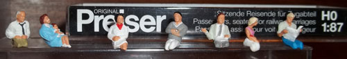

World of HOs
A conceptual art project by Torrey Nommesen.
I am creating miniature tableaus and placing them to see if anyone will see them and then photographing them next to a QR code that points to this website. The miniatures are all HO scale.

A group of doctors and nurses.
A group of construction workers
I am not sure how all of this will manifest, but here's the progress so far (in reverse chronological order):
History:
- Early 2015 - Where did the time go? I actually still want to do this, but you know... life. I still have the H0 figures somewhere in a junk drawer. Email me if you want to help me with this project.
- Late 2012 - Experiments with different glues tested. Results inconclusive.
- Mid 2012 - I put up this site.
- Late 2011 - I bought 2 sets of H0 figures.
Email me if you find one out in the wild at torrey (at) nommesen (dot com).
Download a page of QR codes to this site, place them near your own version of World of HOs.
This project placed in the public domain by Torrey Nommesen